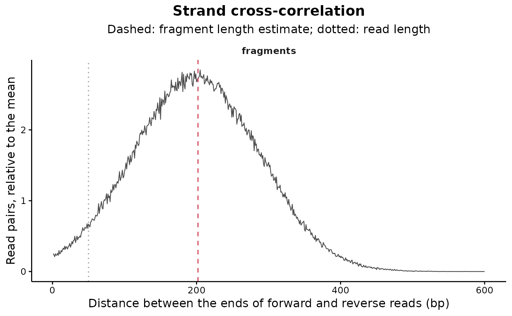

Estimates the fragment length of single-end libraries from the strand cross-correlation of their reads, the same signal phantompeakqualtools and MACS2 read the fragment size from. Paired-end libraries need no estimate, and for them the median insert size is reported instead.
Usage
estimateFragmentLength(
bamFiles = NULL,
regions = NULL,
sampleSheet = NULL,
sampleNames = NULL,
pairedEnd = "auto",
maxDistance = 600,
minMapq = 20,
removeDuplicates = TRUE,
discardRegions = NULL,
maxReads = 1e+05,
nThreads = 1,
verbose = TRUE
)Arguments
- bamFiles
Character vector with the paths of the BAM files, which may name the chromosomes of their assembly in different styles. Default:
NULL, taken fromsampleSheet.- regions
Regions the reads are collected from: a
RegionSetDEobject, aGRangesList, a named list ofGRangesor a singleGRanges. Default:NULL, the three longest chromosomes of the BAM files.- sampleSheet
Data.frame returned by
loadSampleSheet, or the path to a sample sheet, providing the BAM files and the sample names. Default:NULL.- sampleNames
Character vector with the sample names. Default:
NULL, the BAM file names are used.- pairedEnd
Logical value, one logical value per BAM file, or the string
"auto"to read the layout from the files themselves. Default:"auto".- maxDistance
Numeric value with the longest fragment considered, in base pairs. Default:
600.- minMapq
Numeric value with the minimum mapping quality of a read. Default:
20.- removeDuplicates
Logical value indicating whether the reads flagged as duplicates must be discarded. Default:
TRUE.- discardRegions
GRangeswith regions whose reads must be ignored, for instance a blacklist. Default:NULL.- maxReads
Numeric value with the maximum number of forward reads per sample entering the cross-correlation. Beyond it the reads are thinned evenly along the genome. Default:
1e5.- nThreads
Number of threads, one file per thread. Default:
1.- verbose
Logical value to indicate whether the messages must be printed. Default:
TRUE.
Value
A list with three elements. table is a data.frame with one row per sample: sample, paired.end, read.length, fragment.length, method ("cross-correlation" or "insert size") and n.reads, the number of reads or pairs the estimate rests on. profile holds the cross-correlation of the single-end samples, as the number of read pairs found at each distance and the same number relative to its mean. plot draws that profile, with the estimate marked on each sample.
Details
Each fragment leaves a read on the forward strand at its left end and a read on the reverse strand at its right end, so the distance between the 5' ends of forward and reverse reads piles up at the fragment length. The function counts, for every forward read, the reverse reads found at each distance up to maxDistance, and takes the distance with the most pairs. A count of pairs at a given distance is the numerator of the cross-correlation at that shift, the rest of the Pearson formula being the same for every shift, so the two peak at the same place.
A second peak sits at the read length. It comes from mappability rather than from the fragments, since the reads of a region that cannot be mapped go missing on both strands at once, and on libraries with little enrichment it can be the higher of the two. The search therefore starts 15 bp past the read length. A library whose fragments are shorter than that gets an estimate at the start of the search window, and for such a library extending the reads changes little anyway.
Only forward reads whose 5' end falls within the regions are used, while reverse reads are collected up to maxDistance beyond them, so every forward read has the same range of distances to look across and the counts carry no edge effect. The regions of an analysis, a catalogue of peaks for instance, hold far more fragments than the genome at large and give a sharper peak. A value of the estimate sitting at maxDistance means the peak was not reached, and a warning says so.
A fragment length computed elsewhere, by phantompeakqualtools or by the peak caller, can be given to countReads as a column of the sample sheet instead.
Examples
# A single-end library of 200 bp fragments piled on a few sites
set.seed(1)
fragmentStarts <- sort(unlist(lapply(seq(20000, 180000, by = 20000), function(site) {site + round(rnorm(400, 0, 60))})))
readStrand <- sample(c("+", "-"), length(fragmentStarts), replace = TRUE)
readStart <- ifelse(readStrand == "+", fragmentStarts, fragmentStarts + 200 - 50)
readOrder <- order(readStart)
samRecords <- paste(paste0("read", seq_along(readOrder)), ifelse(readStrand[readOrder] == "+", 0, 16), "chrT",
as.integer(readStart[readOrder]), 60, "50M", "*", 0, 0, "*", "*", sep = "\t")
samFile <- file.path(tempdir(), "fragments.sam")
writeLines(c("@HD\tVN:1.6\tSO:coordinate", "@SQ\tSN:chrT\tLN:200000", samRecords), samFile)
bamFile <- Rsamtools::asBam(samFile, destination = file.path(tempdir(), "fragments"), overwrite = TRUE, indexDestination = TRUE)
fragmentEstimate <- estimateFragmentLength(bamFile, verbose = FALSE)
fragmentEstimate$table
#> sample paired.end read.length fragment.length method n.reads
#> 1 fragments FALSE 50 202 cross-correlation 1805
fragmentEstimate$plot
